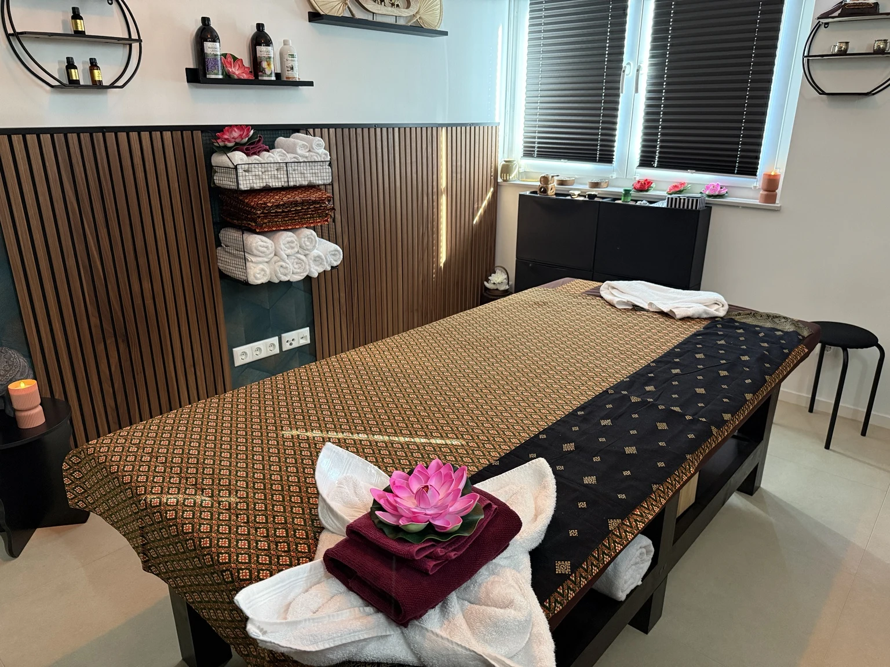
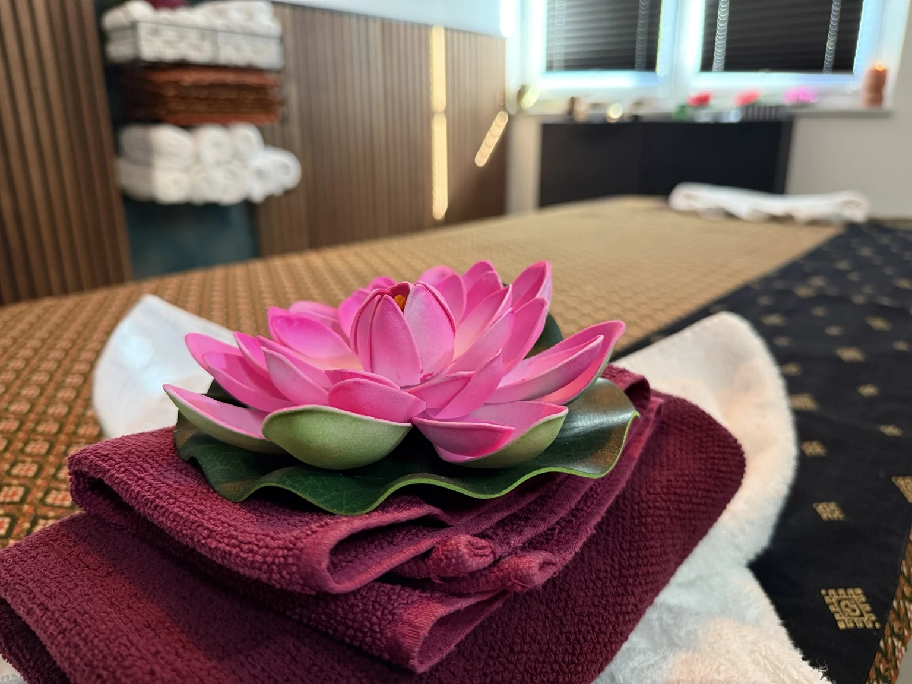

Traditionelle Thaimassage
Bewusste Berührungen, Druck und Dehnungen im Geist der thailändischen Massagetradition.
60 Min. 50 €90 Min. 70 €120 Min. 90 €
↗
THAILÄNDISCHE TRADITION. PERSÖNLICHE AUSZEIT.
Ein Moment nur für Sie. Entdecken Sie originale Thai-Massage in einer Atmosphäre voller Ruhe und Herzlichkeit.
Massagen entdecken ↗Termine ausschließlich nach Vereinbarung
SAWASDEE · HERZLICH WILLKOMMEN
Der Alltag darf draußen bleiben. Bei Hong Thong begegnen Ihnen thailändische Massagetradition, persönliche Aufmerksamkeit und ein mit Liebe eingerichteter Raum. Wählen Sie die Massage und die Zeit, die zu Ihrer Auszeit passen.
MASSAGEN & PREISE
Von einer kleinen Pause bis zur ausgedehnten Auszeit – alle Massagen auf einen Blick.
Bewusste Berührungen, Druck und Dehnungen im Geist der thailändischen Massagetradition.
Sanfte, fließende Massagegriffe mit duftendem Öl für eine wohltuende Pause vom Alltag.
Eine bewusste Auszeit mit besonderer Aufmerksamkeit für den Rücken.
Gönnen Sie Ihren Füßen eine Pause – und sich selbst einen Moment zum Durchatmen.
Alle Preise pro Person und Anwendung. Termine nur nach Vereinbarung.

TRADITION MIT HERZ
Bei Hong Thong steht die originale thailändische Massage im Mittelpunkt. Die Inhaberin bringt ihre durch Zertifikate belegte Qualifikation und die Verbundenheit zu ihrer Heimat Thailand in jede Anwendung ein.
Von der originalen Liege aus Thailand bis zu den sorgfältig ausgewählten Details: Hier entsteht Raum für eine persönliche, entspannte Auszeit.
Ausschließlich traditionelle Massagen und Wellnessanwendungen. Es werden keine erotischen Massagen angeboten.
NUAD THAI · GELEBTE TRADITION
Was hinter den Berührungen steckt – und warum bewusste Zeit für sich so wertvoll sein kann.
Hong Thong ist der Name unseres Studios. Im Mittelpunkt steht die traditionelle thailändische Massage, in Thailand auch Nuad Thai genannt. Sie verbindet gezielte Drucktechniken mit passiven Dehnungen und achtsamen Bewegungen. Anders als bei einer reinen Ölmassage stehen dabei nicht nur streichende Griffe im Vordergrund, sondern auch das behutsame Bewegen und Dehnen des Körpers.
GESCHICHTE & HERKUNFT
Thai-Massage ist tief in der traditionellen Gesundheitskultur Thailands verwurzelt. Ihre Geschichte ist auch mit dem Alltag ländlicher Gemeinschaften verbunden: Menschen suchten nach körperlicher Arbeit die erfahrenen Massagekundigen ihres Dorfes auf.
Über Generationen wurden Erfahrungen und Techniken weitergegeben und zu einem systematischen Wissen entwickelt. Bis heute lebt diese Tradition durch das Lernen und die praktische Weitergabe fort.
Hintergrund: UNESCO · Nuad Thai ↗
TRADITION & BERÜHRUNG
Rhythmischer Druck und geführte Dehnungen prägen die traditionelle Thai-Massage. In der thailändischen Überlieferung spielen außerdem die sogenannten „Sen“ eine Rolle: gedachte Energielinien, an denen sich die Massage orientiert. Sie gehören zum traditionellen Erklärungsmodell und sind keine anatomisch nachgewiesenen Leitungsbahnen.
Bei Hong Thong begegnet Ihnen diese Tradition in einem persönlichen Rahmen – mit zertifizierter Qualifikation, liebevollen Details und einer originalen Liege aus Thailand.
Hong Thong kennenlernen ↗WIRKUNG & WOHLBEFINDEN
Eine Massage kann als wohltuend und entspannend empfunden werden. Bewusste Berührungen und ein ruhiger Rahmen laden dazu ein, den Alltag zu unterbrechen und den eigenen Körper aufmerksamer wahrzunehmen. Wie sich eine Anwendung anfühlt, ist individuell.
Studien zu Massagen allgemein zeigen bei bestimmten Nacken- und Schulterbeschwerden mögliche kurzfristige Vorteile. Daraus lässt sich keine garantierte Wirkung für die Thai-Massage oder eine einzelne Anwendung ableiten. Bei Hong Thong stehen Wellness und persönliches Wohlbefinden im Mittelpunkt.
Die Massage ersetzt keine ärztliche Diagnose oder Behandlung. Bitte sprechen Sie bestehende Beschwerden, eine Schwangerschaft oder kürzlich erfolgte Operationen vorab an und klären Sie bei Unsicherheit ärztlich, ob eine Massage für Sie geeignet ist.
EINBLICKE IN HONG THONG
Warmes Holz, thailändische Details und liebevoll vorbereitete Liegen. Lernen Sie Ihren Ort der Ruhe kennen.
IHRE ERSTE AUSZEIT BEI UNS
Wählen Sie Ihre Wunschmassage und die passende Dauer. Ihren Termin vereinbaren wir persönlich.
Vor Ihrer Massage ist Raum, über Ihre Wünsche zu sprechen und sich auf die Anwendung einzustimmen.
Lassen Sie den Alltag hinter sich und schenken Sie Ihrer persönlichen Auszeit die volle Aufmerksamkeit.
GUT ZU WISSEN
Die Massagen finden ausschließlich nach vorheriger Terminvereinbarung statt. So bleibt ausreichend Zeit für Ihre persönliche Anwendung.
Zur Auswahl stehen traditionelle Thaimassage, Aromaölmassage, Rückenmassage und Fußmassage. Die verfügbaren Zeiten und Preise finden Sie in unserer Übersicht.
Originale thailändische Massagetradition, die zertifizierte Qualifikation der Inhaberin und die originale Spezialliege aus Thailand prägen das Angebot. Die Fotos zeigen den tatsächlichen Massageraum.
EIN MOMENT, DER IHNEN GEHÖRT
Termine ausschließlich nach persönlicher Vereinbarung.
HONG THONG · ORIGINAL THAIMASSAGEUhlandring 315732 SchulzendorfRoute zum Studio planen ↗